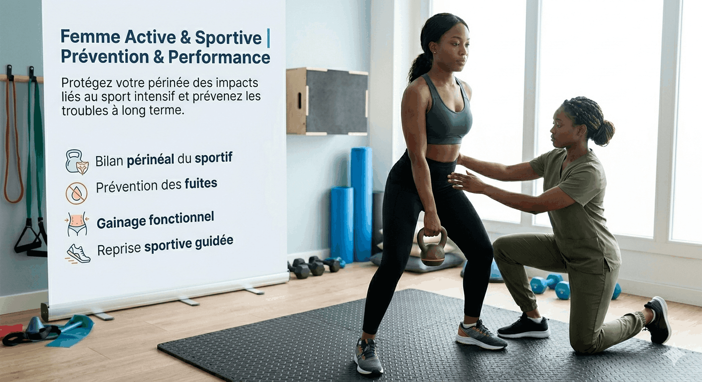
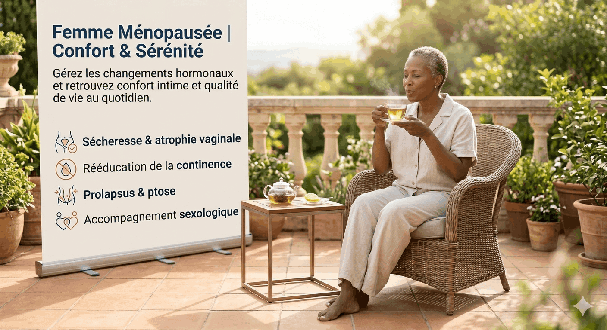
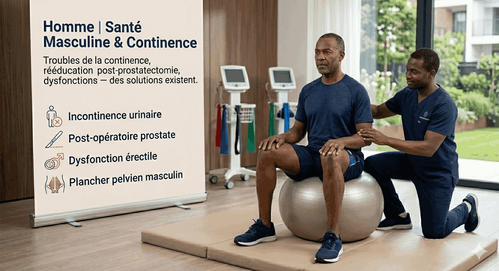

Spécialiste de la rééducation périnéale à Abidjan. Un espace de soin bienveillant, confidentiel et professionnel — pour les femmes en post-partum, les sportives, et toute personne souhaitant retrouver confort et qualité de vie.
Beaucoup de femmes (et d'hommes) vivent ces situations au quotidien, souvent dans le silence. Pourtant, des solutions existent.
Lors d'un effort, d'un éternuement ou d'une course — ce n'est pas une fatalité, c'est traitable.
Douleurs, cicatrices, sensation de lourdeur — votre corps a besoin d'accompagnement.
Inconfort lors des rapports ou des examens gynécologiques — une rééducation adaptée peut tout changer.
Descente d'organes, périnée sollicité par l'effort — protégez-vous avant qu'il ne soit trop tard.
Femmes ménopausées, sportives, femmes actives et même hommes — la santé périnéale concerne tout le monde. L'ignorer, c'est accepter de vivre avec un handicap invisible.
✦ Faire mon auto-diagnostic gratuitUn espace de soin discret,
chaleureux et
professionnel
À Abidjan, la rééducation périnéale reste un sujet entouré de tabous. Notre cabinet est né d'une conviction : chaque personne mérite des soins de qualité, dans un cadre discret, bienveillant et professionnel.
Nous accompagnons femmes en post-partum, sportives, femmes ménopausées, et hommes avec des programmes de soin entièrement personnalisés, basés sur une évaluation rigoureuse de chaque situation.
Que vous soyez jeune maman, sportive, en période de ménopause ou homme, nous avons un protocole adapté à votre situation.
Récupérez votre tonicité, cicatrisez vos tissus, et retrouvez votre corps sereinement après la naissance.

Femme Active & SportiveProtégez votre périnée des impacts liés au sport intensif et prévenez les troubles à long terme.

Femme MénopauséeGérez les changements hormonaux et retrouvez confort intime et qualité de vie au quotidien.

HommeTroubles de la continence, rééducation post-prostatectomie, dysfonctions — des solutions existent.
Un processus clair, discret et bienveillant du premier contact à votre guérison.
Un message WhatsApp suffit. En quelques secondes, posez votre question ou demandez votre premier rendez-vous — discrètement.
Lors de la première séance, nous évaluons votre situation sans jugement pour comprendre précisément vos besoins.
Un protocole adapté, suivi et ajusté à chaque étape de votre progression — jusqu'à l'objectif fixé ensemble.
Réponse WhatsApp garantie dans les 2h ⚡
En 4 questions anonymes, découvrez si une consultation pourrait améliorer votre qualité de vie.
Anonyme · 2 minutes · Sans engagement
1/4 — Avez-vous des fuites urinaires lors d'un effort (toux, éternuement, sport) ?
2/4 — Ressentez-vous des douleurs ou un inconfort dans la région périnéale ?
3/4 — Avez-vous accouché ou subi une intervention chirurgicale dans la région pelvienne ?
4/4 — Ces troubles affectent-ils votre qualité de vie au quotidien ?
🔒 Anonyme et confidentiel — Aucune donnée n'est collectée. Ce diagnostic ne remplace pas une consultation médicale.
Des témoignages anonymisés de patientes qui ont repris confiance en leur corps.
« Après mon deuxième accouchement, j'avais honte de mes fuites. Je n'en parlais à personne. Après 6 séances, j'ai retrouvé une vie normale. Je regrette de ne pas l'avoir fait plus tôt. »
« Je faisais de la course à pied depuis 10 ans et je vivais avec des douleurs périnéales comme si c'était normal. Le cabinet m'a montré que non, ce n'est pas normal. Aujourd'hui je cours sans contrainte. »
« À 58 ans, je pensais que ces inconforts faisaient partie de la vie. La rééducation périnéale m'a prouvé le contraire. L'équipe est d'une discrétion et d'une bienveillance remarquables. »
Nous répondons aux questions que vous n'osez peut-être pas encore poser.
La prise de contact la plus simple, c'est WhatsApp. Mais vous pouvez aussi nous écrire directement.
Pas besoin de tout expliquer dès le premier message. Un simple "Je souhaite prendre rendez-vous" suffit. Nous vous guidons ensuite avec bienveillance.
🔒 Vos informations restent strictement confidentielles